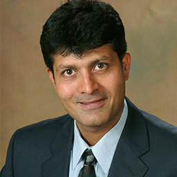

Professor of Marketing, Naveen Jindal School of Management, University of Texas at Dallas
BiographyNanda Kumar is a Professor of Marketing at the Naveen Jindal School of Management, University of Texas at Dallas, where he has been on the faculty since 1999. He earned his Ph.D. from the University of Chicago Graduate School of Business in 2000, following an M.S. in Computer Science from the University of Maryland and a B.Tech. in Computer Science and Technology from the Indian Institute of Engineering Science and Technology, Shibpur. His research builds analytical and empirical models of competitive strategy, pricing, channels of distribution, and advertising, with work spanning supermarket pricing and promotions, product bundling, loyalty programs, and luxury and platform markets. His research has appeared in Marketing Science, Management Science, Journal of Marketing Research, Quantitative Marketing and Economics, Information Systems Research, Journal of Retailing, and Journal of Economic Theory. He has served on the editorial board of Marketing Science and as an ad-hoc associate editor for Management Science, and has advised eight completed doctoral students across Marketing and Information Systems. Alongside his role at UTD, he is active in executive education at the Indian School of Business.

Marketing Management (Indian School of Business; Booth Chicago Executive MBA), Customer Analytics and Insights, Database Marketing, Marketing Channels, Pricing (INSEAD Fontainebleau & Singapore; ISB), Sales Management (ISB, MFAB).
Modules on Advertising and Media Management and Omnichannel Retailing.
Module on Omnichannel Retailing.
Elective and executive sessions at ISB covering channel strategy, omnichannel retailing, regression and analytics, and attribution modeling.